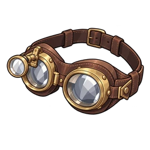

Nişan Gözlüğü
SR Kafa
Bir gözünde büyüteç olan usta gözlüğü. Tuzağın can alıcı yerini görür.
Genel Bakış
| Part | Kafa |
|---|---|
| Rarity | SR |
| HP Lv1 | 25 |
| Seviye başına sabit HP | 1 |
| HP büyüme oranı | x1.04 |
| Gacha | Ücretli gacha: Sahneden itibaren 31 (Banner 4, Banner 5, Banner 6, Banner 7, Banner 8, Banner 9, Banner 10) |
Skills
- Tuzak hasarı +20
Seviyeye göre HP
L düzeyindeki HP = yuvarlak(temel HP x büyüme^(L-1)) + kat(seviye başına sabit x (L-1))
| Lv | HP |
|---|---|
| Lv1 | 25 |
| Lv10 | 45 |
| Lv20 | 72 |
| Lv30 | 107 |
| Lv50 | 220 |
| Lv99 | 1265 |
Seviye sınırı 20'de başlar; her kopya onu 10 kadar yükselterek 99.